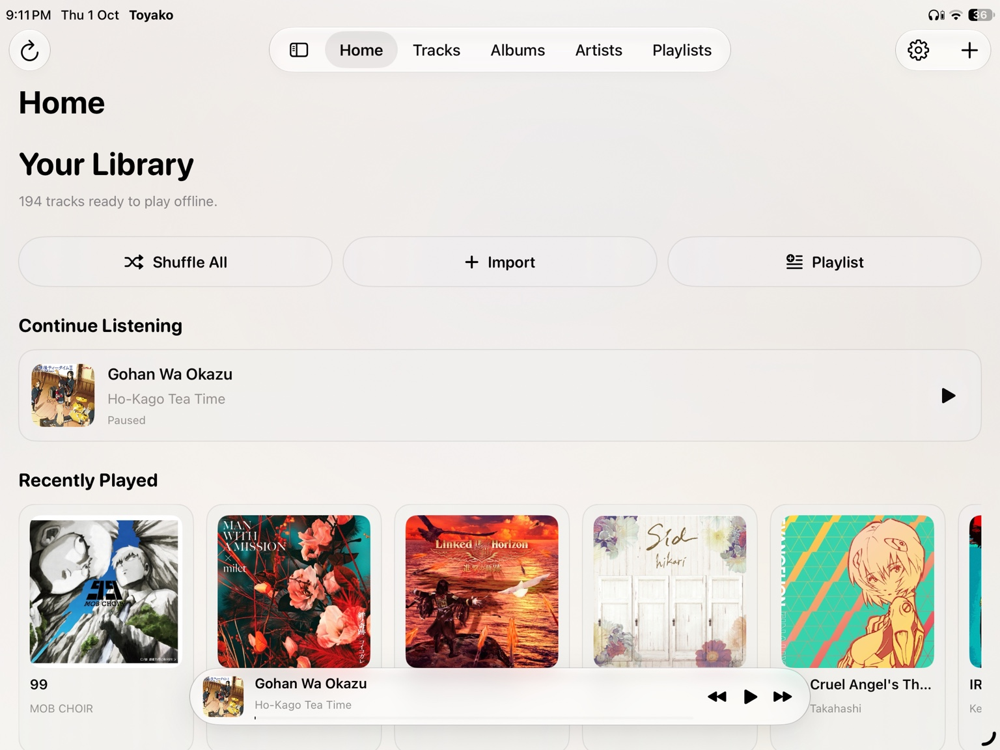
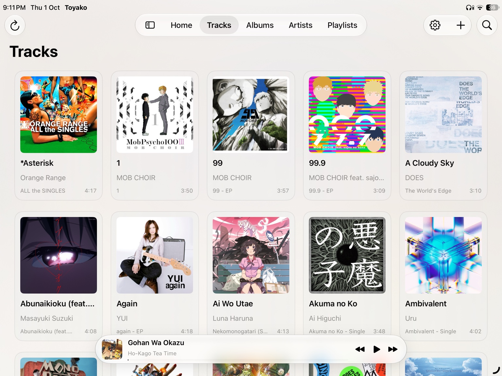
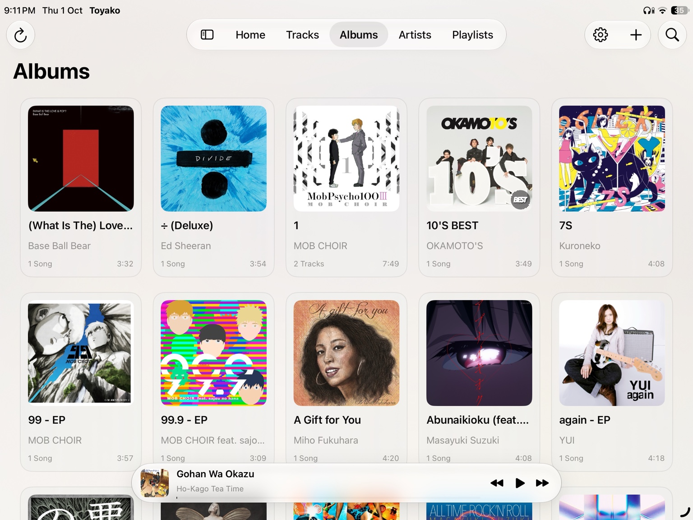
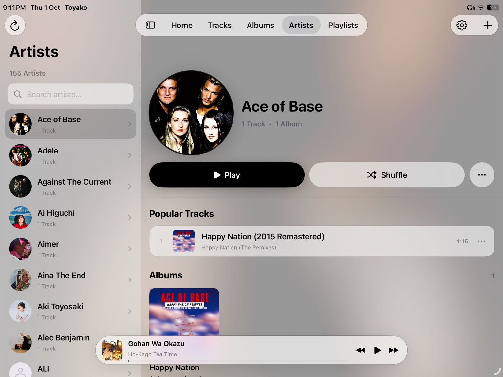
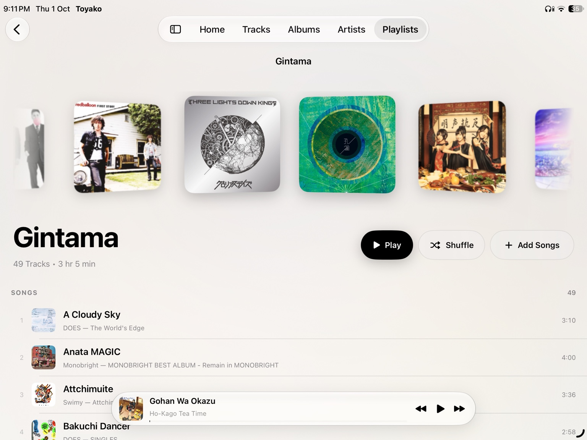
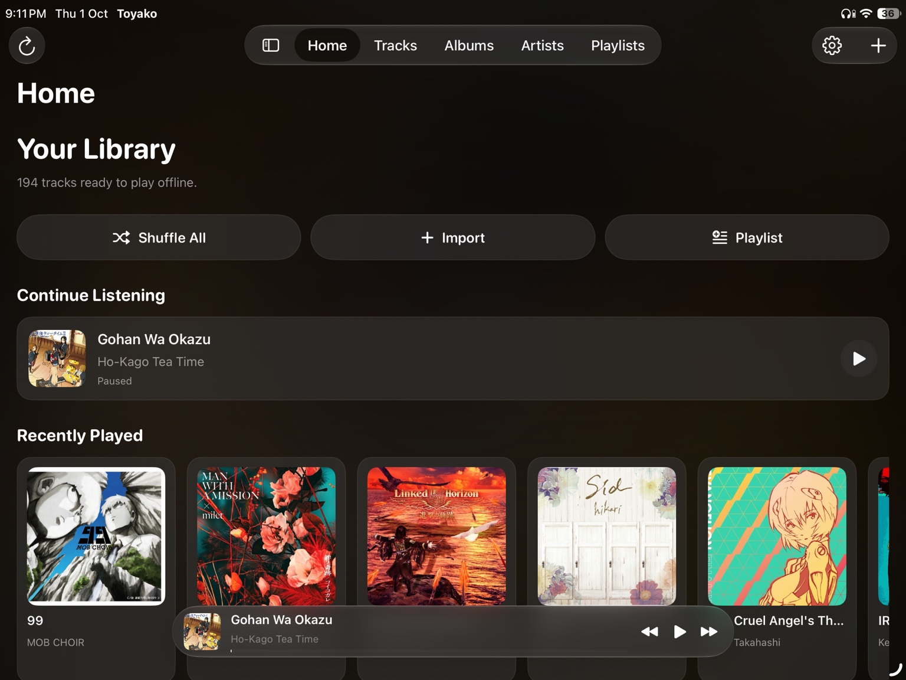
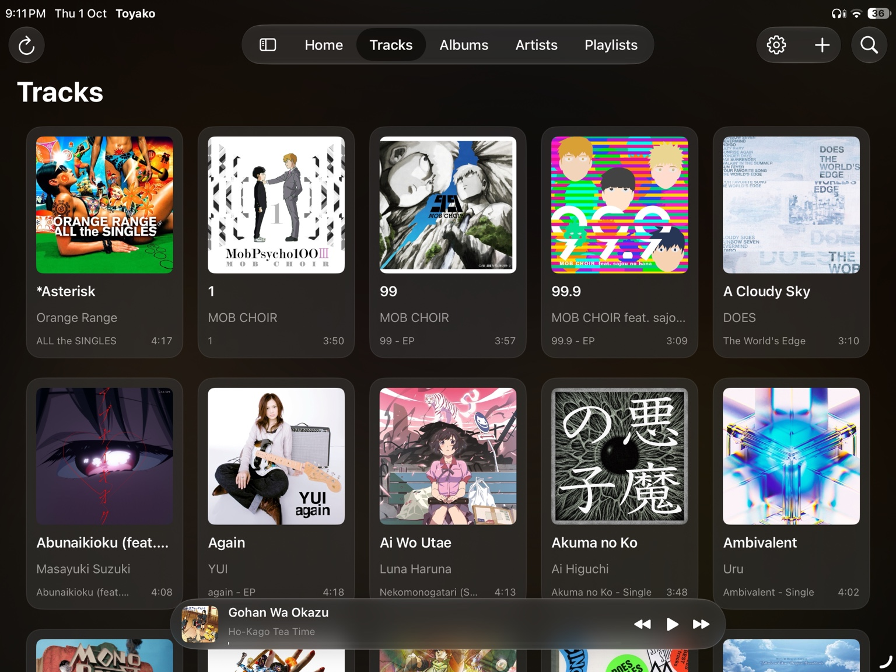
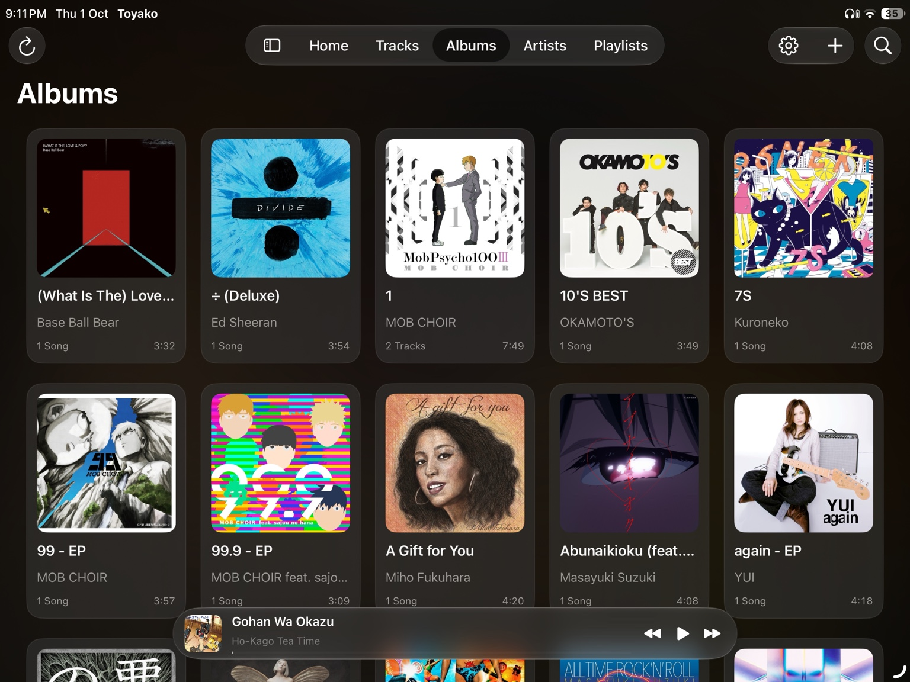
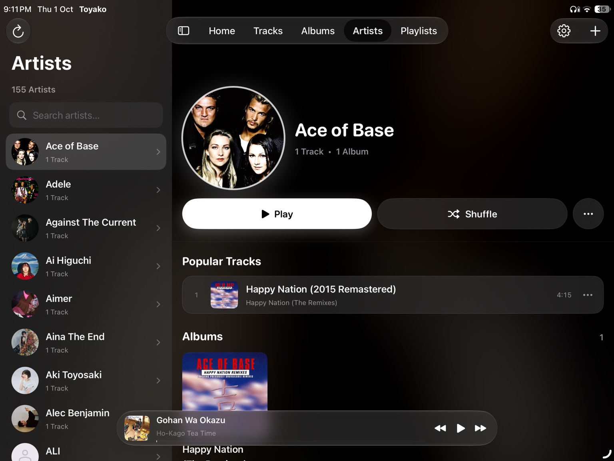
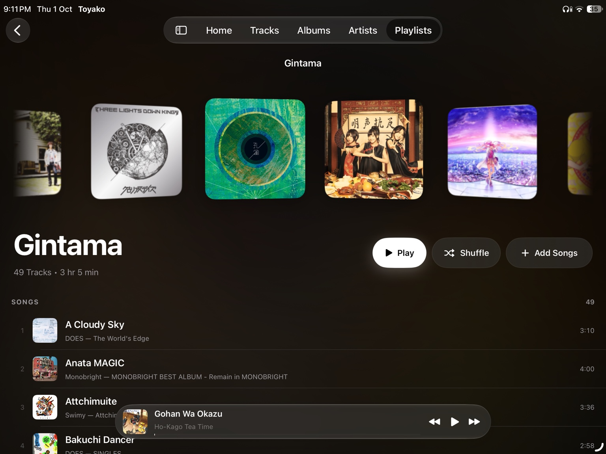

Library
Keep your tracks, albums, artists and playlists in one clean place.
MUSIC PLAYER FOR IPAD
Toyako is a simple music player for your local library. Browse albums, artists, tracks and playlists, then enjoy your music with a beautiful Now Playing screen.
Free • Local music • Offline listening • Made for iPad

ONE APP. YOUR LIBRARY.
Keep your tracks, albums, artists and playlists in one clean place.
Simple controls, album artwork, queue, shuffle and repeat.
Enjoy timed lyrics, including Japanese lyrics with romaji support.
Your local music stays available without depending on a streaming service.
THE APP
Real screenshots from the app.









LATEST RELEASE
Download the IPA from the latest GitHub release.